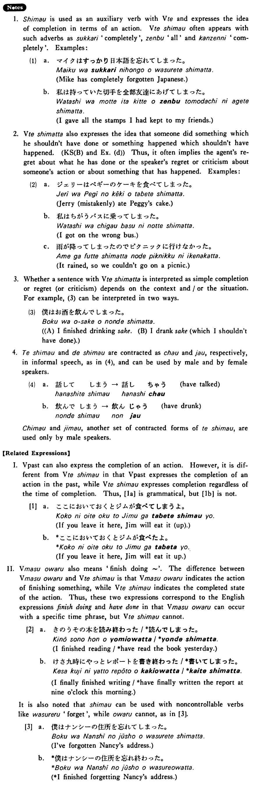

しまう (B. 403)
- (ksa).
- 池田君は三日でその本を読んでしまった・しまいました。
- Mr. Ikeda finished reading the book in three days.
- (ksb).
- 私はルームメートのミルクを飲んでしまった・しまいました。
- I (mistakenly) drank my roommate's milk.
- (a).
- もう宿題をしてしまいましたか。
- Have you done your homework yet?
- (b).
- 私は今日中にそのレポートを書いてしまおうと思っている。
- I think that I will finish (writing) the report today.
- (c).
- 早くご飯を食べてしまいなさい。
- Finish (eating) your meal quickly.
- (d).
- シチューを作り過ぎてしまいました。
- I made too much stew (to my regret).
